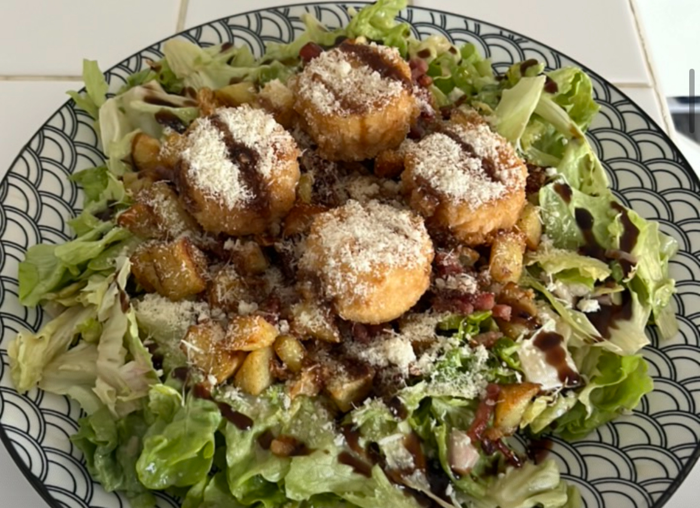
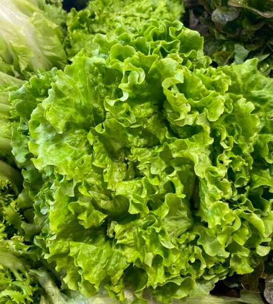
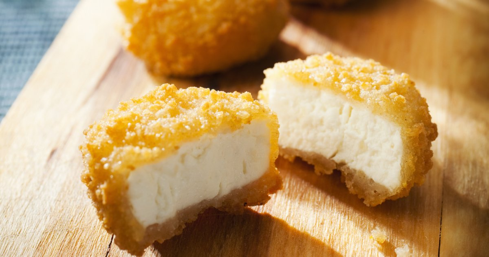
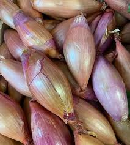
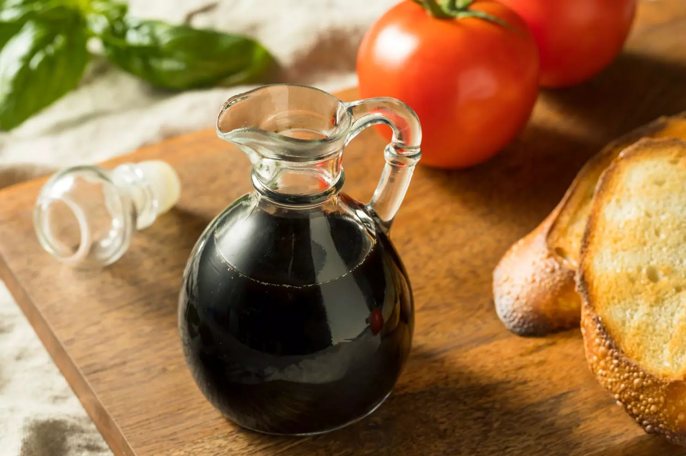

SALADE DE CHÈVRE CHAUD
INGRÉDIENTS : ( 1 PERSONNE )

100 g Salade

200 g Pommes de terre

100 g Allumettes de lardons

4 Chèvres panés

1 Échalote

Huile végétale

Vinaigre de vin rouge

Moutarde

Parmesan

Vinaigre balsamique

Sel / Poivre